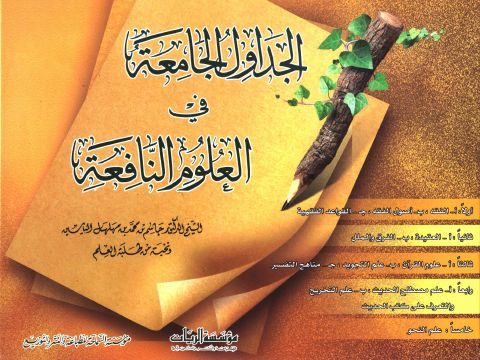

Downloads need an internet connection.
الجداول الجامعة في العلوم النافعة- ط. السماحة والريان
Authors: جاسم بن محمد مهلهل الياسين
Publishers: مؤسسة الريان مؤسسة السماحة
**▫️ العنوان: الجداول الجامعة في العلوم النافعة- ط. السماحة والريان** ▪️ المؤلف: #جاسم_محمد_مهلهل_الياسين ▫️ الناشر: #مؤسسة_السماحة • #مؤسسة_الريان ▪️ تاريخ النشر: 1431هـ 2010م ▫️ بلد النشر: بيروت، #لبنان ▪️ الطبعة: 3 ▫️ عدد الأجزاء: 2 ▪️ الصفحات: 568 ▫️ نوع الوعاء: #كتاب ▪️ التصنيف الرئيسي: #الثقافة_الإسلامية ۪